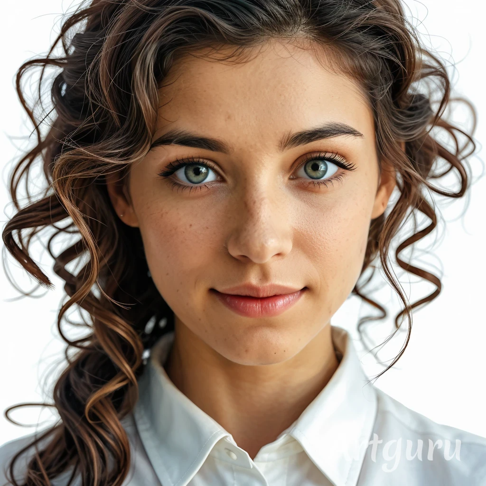

¿Que es Artguru?Artguru es una plataforma avanzada que utiliza inteligencia artificial para transformar imágenes, videos y textos en obras artísticas personalizadas. Diseñada tanto para aficionados como para profesionales, permite a los usuarios generar arte en diferentes estilos, adaptados a sus preferencias y necesidades. Con acceso a herramientas creativas y funciones de alta calidad, Artguru se convierte en una herramienta esencial para quienes buscan dar rienda suelta a su creatividad de manera eficiente.
Caracteristicas de Artguru
Artguru es un generador de arte en línea gratuito basado en IA que permite a los usuarios crear obras de arte únicas y sorprendentes a partir de indicaciones de texto o imágenes subidas. Ofrece diversas herramientas impulsadas por IA, incluyendo generación de texto a imagen, conversión de imagen a diferentes estilos artísticos, mejora de fotos, creación de avatares y cambio de rostros. Los usuarios pueden explorar diferentes estilos artísticos, personalizar salidas y compartir sus creaciones con la comunidad de Artguru.
Generación de Texto a Imagen:Crear obras de arte originales ingresando descripciones de texto, con IA interpretando y generando imágenes correspondientes.
Transferencia de Estilo de Imagen:Transformar fotos subidas en diferentes estilos artísticos como pinturas al óleo, acuarelas, bocetos y más.
Creación de Avatares con IA:Generar avatares personalizados y realistas a partir de fotos de usuarios en varios estilos y expresiones.
Tecnología de Cambio de Rostro:Cambiar rostros en fotos o videos, permitiendo contenido visual creativo y entretenido.
Mejora de Fotos:Mejorar la calidad de la imagen agudizando detalles, mejorando colores y aumentando la resolución.
Ventajas
Interfaz fácil de usar adecuada para principiantes
Ofrece créditos diarios gratuitos para uso básico
Amplia gama de estilos artísticos y características
Soporta tanto entradas de texto como de imagen para la generación de arte
Desventajas
Créditos gratuitos limitados por día
Algunas funciones avanzadas requieren una suscripción paga
Los resultados generados se eliminan automáticamente después de 30 días
Cómo Usar Artguru
Visita el sitio web de Artguru: Ve a
Ingresa un aviso de texto o sube una imagen: Escribe una descripción de texto de la imagen que deseas crear, o opcionalmente sube una imagen existente para transformar
Selecciona el número de imágenes: Elige cuántas imágenes generadas por IA deseas (1, 2 o 4). Ten en cuenta que necesitas iniciar sesión para seleccionar más de 1 imagen
Agrega un aviso negativo (opcional): Ingresa cualquier elemento que no deseas que aparezca en la imagen generada
Haz clic en Generar: Presiona el botón Generar para crear tu arte de IA
Visualiza y descarga los resultados: Una vez generadas, puedes ver, descargar y compartir tus imágenes creadas por IA
Explora otras características: Consulta las secciones Explorar, Tendencias, Mis Creaciones y Mis Me Gusta para descubrir más arte de IA
-Como se puede ver en la imagen, en el medio esta el cuadro de texto en el que podemos describir la imagen que necesitamos y justo abajo podemos seleccioner el estilo en el que queremos la imagen.. una vez generada la imagen, en la parte superior tenemos opciones para usar, como mejorar imagen, aclarar la imagen o utilizar alguna de las herramientas que dispone esta IA.
Usuarios ideales para Artguru
Artistas y diseñadores gráficos
Artguru es ideal para artistas y diseñadores que desean explorar nuevas formas de crear arte utilizando tecnología de vanguardia.
Creadores de contenido y medios digitales
La herramienta también es perfecta para creadores de contenido que buscan generar imágenes o videos artísticos para complementar sus publicaciones o proyectos.
Profesionales de marketing y publicidad
Profesionales en marketing y publicidad pueden beneficiarse de Artguru para crear imágenes únicas y visualmente atractivas para sus campañas publicitarias.
Casos de uso de Artguru
-Puede usarse para la creación de Contenido para Redes Sociales: Generar visuales únicos para publicaciones en redes sociales, fotos de perfil y campañas de marketing digital.
-Para creación de Entretenimiento y Memes: Crear contenido divertido o creativo mediante el cambio de rostros en fotos y videos para fines de entretenimiento.
-Y tambien para experimentación con Arte Digital: Explorar nuevos estilos y técnicas artísticas sin suministros de arte tradicionales o capacitación extensa.
Algunos usuarios que se dedican al Diseño Gráfico tambien suelen utilizarla como Inspiración, ya que genera rápidamente arte conceptual e ideas visuales para proyectos de diseño gráfico y branding.
Ejemplo:
-Le pedi a Artguru que me ayudara a hacer una foto para un CV de la siguiente manera:
-Y la imagen que obtuve a cambio fue la siguiente:

Preguntas fecuentes:
Sí, Artguru te permite subir tus propias fotos para transformarlas en arte AI o para usarlas en el intercambio de rostros.
Artguru afirma que todas las fotos subidas son destruidas inmediatamente después de la producción de imágenes AI para proteger la privacidad del usuario.
Los resultados generados se eliminan automáticamente después de 30 días. Se aconseja a los usuarios que descarguen sus creaciones antes de este tiempo.
Sí, Artguru permite la creación de arte mediante IA de diferentes estilos, ya sea realista, abstracto o cualquier otro, y facilita la creación de contenido visual de forma rápida y eficiente.
Sí, Artguru ofrece uso gratuito con 5 créditos por día. Cada crédito te permite generar una imagen. Créditos adicionales están disponibles a través de planes premium.
Artguru ofrece varias suscripciones premium con características avanzadas y acceso a herramientas exclusivas. Estas suscripciones se pueden pagar de forma mensual o anual según el plan elegido.
Artguru prioriza la seguridad y la privacidad de sus usuarios. Cumple con las regulaciones de protección de datos y ofrece opciones para gestionar y eliminar cookies. Además, es posible controlar la recopilación de información personal en cualquier momento.
No, Artguru no recoge datos de menores de 13 años y toma medidas para eliminar cualquier información proporcionada por menores. Los usuarios de 13 a 16 años deben obtener el consentimiento de sus padres o tutores para usar el servicio.
Artguru cumple con la Ley de Privacidad de los Consumidores de California (CCPA) y otras leyes similares, permitiendo a los usuarios solicitar la eliminación, corrección o acceso a sus datos personales. Los usuarios pueden gestionar su privacidad en cualquier momento a través de la configuración de su cuenta.